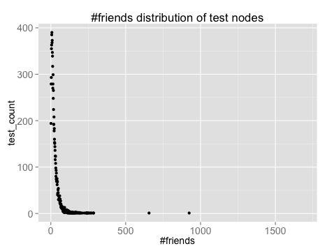
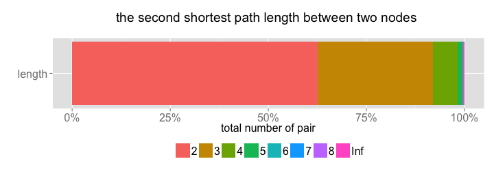

All the way down
R03922142 Yu Ran , R03922145 Yi Huang , R03944049 Bowen Yuan


from all nodes in graph to people who is within 3-step distance from the target node

Common Neighbors(F1-score:0.103298 MAP:0.083843)
Jaccard's coefficient
Adamic/Adar \(\bigstar\) (F1-score:0.112816 MAP:0.083212)
Resource Allocation Index
- Common Neighbors: 50%
- Adamic/Adar: 30%
using adjacency matrix as feature
Data Sampling - select training set and validate set
Feature extraction - combine user profile and topological features
Models - logistic regression, SVM